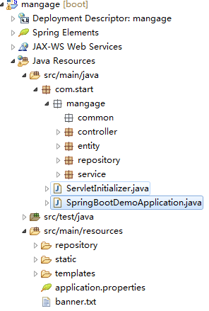
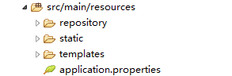

记录一次自己搭建springboot的经历
这里借用别的博主分享的方法 https://blog.csdn.net/mousede/article/details/81285693

启动类：SpringBootDemoApplication
package com.start;
import org.mybatis.spring.annotation.MapperScan;
import org.springframework.boot.SpringApplication;
import org.springframework.boot.autoconfigure.SpringBootApplication;
@SpringBootApplication(scanBasePackages = "com")
@MapperScan({"com.start.mangage.repository","com.start.mangage.service"})
public class SpringBootDemoApplication {
public static void main(String[] args) {
SpringApplication.run(SpringBootDemoApplication.class,args);
}
}新建一个配置文件起名application.properties
#服务器端口号
server.port=8011这里我使用maven建的项目 所以依赖就需要在pom.xml中加入下面一些依赖 原本的你不用管放里面就可以了
<dependency>
<groupId>org.springframework.boot</groupId>
<artifactId>spring-boot-starter-tomcat</artifactId>
<scope>provided</scope>
</dependency>
<dependency>
<groupId>org.apache.tomcat.embed</groupId>
<artifactId>tomcat-embed-jasper</artifactId>
<scope>1.2</scope>
</dependency>
<dependency>
<groupId>org.springframework.boot</groupId>
<artifactId>spring-boot-starter-web</artifactId>
</dependency>
<build>
<plugins>
<!-- 资源文件拷贝插件 -->
<plugin>
<groupId>org.apache.maven.plugins</groupId>
<artifactId>maven-resources-plugin</artifactId>
<configuration>
<encoding>UTF-8</encoding>
</configuration>
</plugin>
<plugin>
<groupId>org.springframework.boot</groupId>
<artifactId>spring-boot-maven-plugin</artifactId>
</plugin>
</plugins>
</build>到这里基本一个项目就搭建好啦，用浏览器访问http://localhost:8011就可以访问默认首页
下面是我第一次搭建过程中最为头疼的地方了 百度了很多才解决
首先需要在目录中创建文件夹static（存放js，css等）和templates（存放页面文件jsp，html等）

在pomxml中添加依赖
<!-- 访问静态资源 -->
<!-- <dependency>
<groupId>org.springframework.boot</groupId>
<artifactId>spring-boot-starter-thymeleaf</artifactId>
</dependency -->
<!-- jsp依赖 -->
<dependency>
<groupId>javax.servlet</groupId>
<artifactId>javax.servlet-api</artifactId>
<scope>provided</scope>
</dependency>
<dependency>
<groupId>org.apache.tomcat.embed</groupId>
<artifactId>tomcat-embed-jasper</artifactId>
<scope>provided</scope>
</dependency>
<dependency>
<groupId>org.apache.tomcat</groupId>
<artifactId>tomcat-jsp-api</artifactId>
</dependency>
<resources>
<resource>
<directory>src/main/java</directory>java文件的路径
<includes>
<include>**/*.properties</include>
<include>**/*.*</include>
</includes>
<!-- <filtering>false</filtering> -->
</resource>
<resource>
<directory>src/main/resources</directory>资源文件的路径
<includes>
<include>**/*.*</include>
</includes>
</resource>
</resources>这里一开始我用 thymeleaf 这里依赖导致我怎么也访问不到我的jsp格式的页面，后来我改用了jsp依赖就可以，就是一个依赖的问题把我这初学者难上了天，唉！
配置文件中添加
#配置jsp视图的位置和后缀
spring.mvc.static-path-pattern=/**
spring.mvc.view.prefix=/WEB-INF/jsp/
spring.mvc.view.suffix=.jsp
spring.resources.static-locations=classpath:/META-INF/resources/,classpath:/resources/,classpath:/static/,classpath:/public/
然后我建了一个controller类，测试了一下访问页面，成功访问到了。
勤能补拙，努力努力!